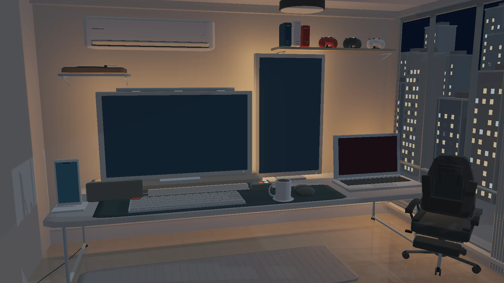

Enter the studio ↗Interactive web application
Josh
Living Studio
A personal workspace you can explore. Move closer to the monitor for projects, open the laptop for my portfolio, or reach for the phone to find my contact links.
- 3D desk experience
- WebGL & JavaScript
- Interactive objects